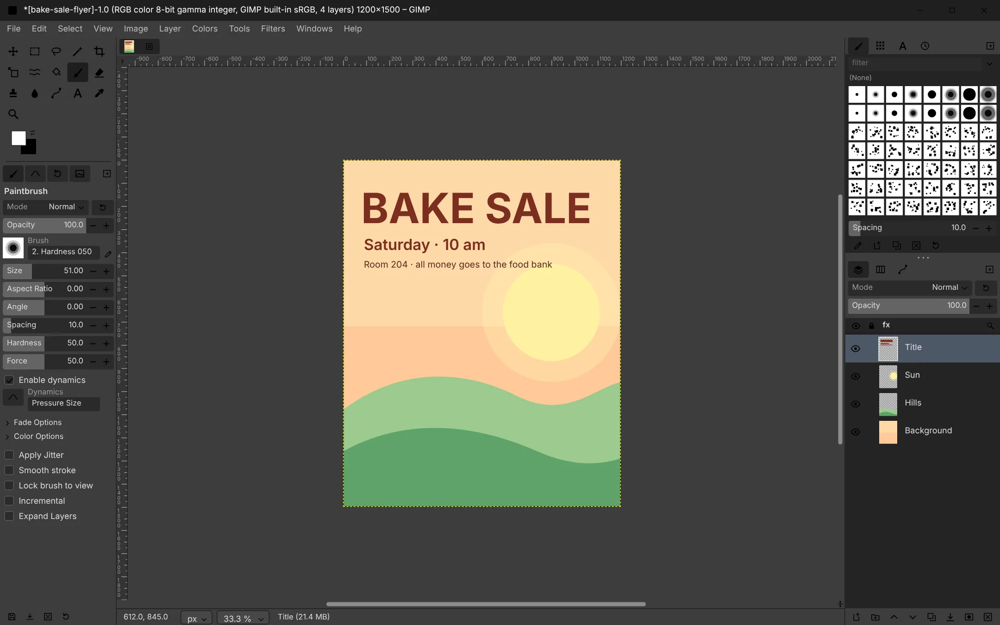

Exporting and merging in GIMP 3.0
Clickable prototype · Research Brief 4
Novices took 13 to 20 minutes to export a PNG, lost in jargon-heavy dialogs, and one never found the merge command. This prototype shows the redesign in GIMP 3.0’s interface: Save a copy as PNG/JPG next to Save, a plain options dialog with the rest under More options, and Merge all layers in the Layers panel. With it, median export time fell from 1,100 to 95 seconds, and all 6 novices merged the layers.
Click what you would use (File, Save a copy as PNG/JPG, Save copy, the Layers panel menu, Merge all layers), or step through with Next and Back. Clicking anywhere else shows what is clickable.

A recreation made for this portfolio: each screen is an image, with clickable areas where the prototype’s links are. GIMP is made by the GIMP project; this prototype is not affiliated with or endorsed by them. The flyer and files shown are made up, and the icons are generic.